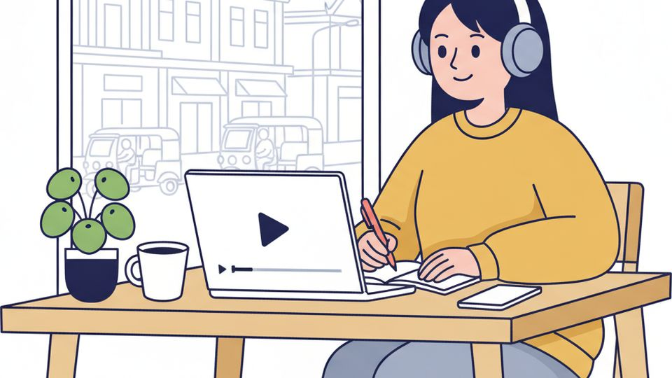
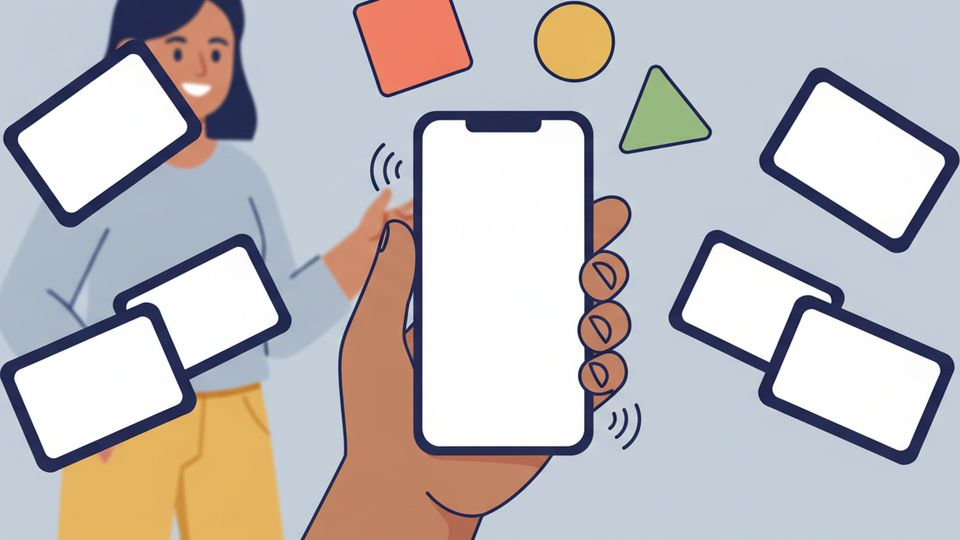
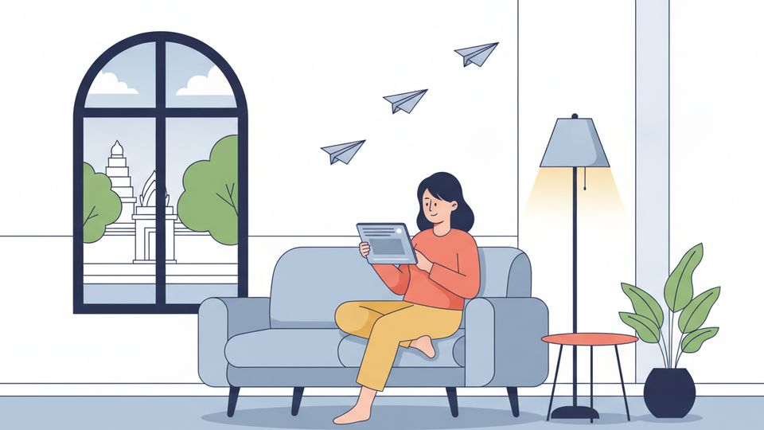
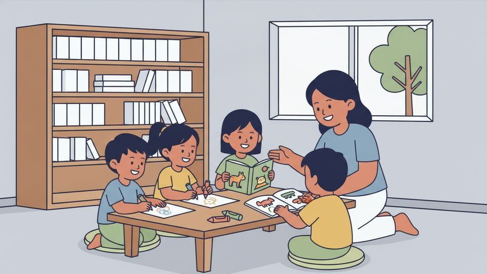
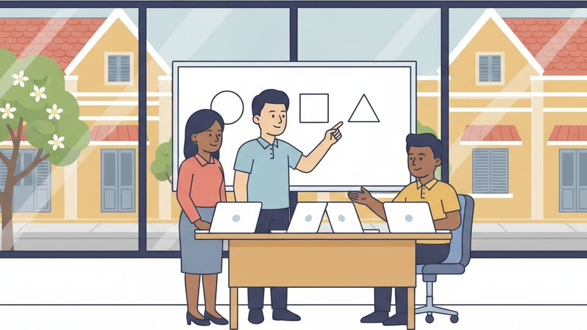

Khmer roleplay
クメール語 ロールプレイング教材
カンボジアで実際にある場面を、そのまま声に出して練習する教材です。 会話・読み方・日本語訳・単語の表・文法の解説が1本にまとまっています。 PDFでも配っているので、印刷してレッスンに持ってきていただけます。
- 9 本
- せりふ 118
- 単語 のべ 409 語
このほかに 7 本を準備しています。確認が終わったものから、ここに増やしていきます。
 1ドライヘッドスパの来店・受付・案内接客からだ
1ドライヘッドスパの来店・受付・案内接客からだ 2ドライヘッドスパの会計接客食べる・買う
2ドライヘッドスパの会計接客食べる・買う 3ドライヘッドスパのお見送り接客あいさつ
3ドライヘッドスパのお見送り接客あいさつ 4病院の受付からだ聞き流し動画あり
4病院の受付からだ聞き流し動画あり 5病院の診察からだ聞き流し動画あり
5病院の診察からだ聞き流し動画あり 6トゥクトゥクでの道案内移動聞き流し動画あり
6トゥクトゥクでの道案内移動聞き流し動画あり 7レストランで注文する食べる・買う動画 11月20日 公開予定
7レストランで注文する食べる・買う動画 11月20日 公開予定 8市場でTシャツを買う食べる・買う動画 11月20日 公開予定
8市場でTシャツを買う食べる・買う動画 11月20日 公開予定 9クメール語の勉強について話す学ぶ・話す動画 12月4日 公開予定
9クメール語の勉強について話す学ぶ・話す動画 12月4日 公開予定
更新のお知らせ
- ①〜⑨ 9本を公開しました（ドライヘッドスパ・病院・トゥクトゥク・レストラン・市場・勉強の話）
私がやっていること
 公式LINE
公式LINEレッスンの相談
レッスンに興味を持たれた方は、まず面談をさせていただきます。レッスンは、プノンペンでの対面とオンラインのどちらでも受けられます。公式LINEを追加してご連絡ください。 YouTube
YouTube動画でクメール語を学ぶ
会話・発音・聞き流しの動画を出しています。この教材と同じテーマの「聞き流し」もここにあります。
Udemy動画講座で基礎から
クメール語の基礎をまとめた動画講座です。自分のペースで進めたい方に向いています。
単語アプリ単語を覚える
重要単語を音声つきで覚えられるアプリです。入れなくても、ブラウザでそのまま使えます。
Telegram記事で学ぶ
クメール語の記事を週1回配信しています。
孤児院支援カンボジアでの活動
プノンペンの孤児院への支援を続けています。レッスンとは別の活動ですが、私たちの軸になっています。
運営会社トライアンフカンボジアについて
この教材をつくっている会社です。クメール語講座のほか、インターンやICTサポート、孤児院支援など、カンボジアでの活動を紹介しています。
＋
ホーム画面に追加すると、電波の悪いところでも読めます。